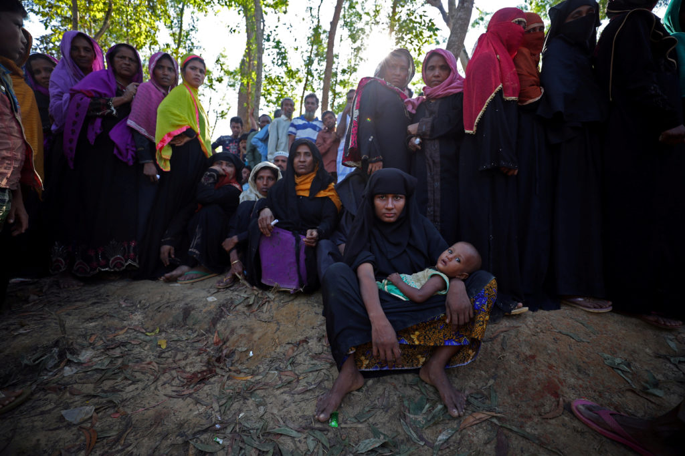

‘Ethnic cleansing’ bleaches the atrocities of genocide

Description: Genocide has been the leading cause of preventable violent death in the 20th–21st century, taking even more lives than war. The term ‘ethnic cleansing’ is used as a euphemism for genocide despite it having no legal status. Like ‘Judenrein’ and ‘racial hygiene’ in Nazi medicine, it expropriates pseudo-medical terminology to justify massacre. Use of the term reifies a dehumanized view of the victims as sources of filth and disease, and propagates the reversed social ethics of the perpetrators. Timelines for recent genocides (Bosnia, 1991–1996, 200 000; Kosovo 1998–2000, 10 000–20 000; Rwanda, 1994, 800 000; Darfur 2002–2006, >400 000) show that its use bears no relationship to death tolls or the scale of atrocity. Bystanders’ use of the term ‘ethnic cleansing’ signals the lack of will to stop genocide, resulting in huge increases in deaths, and undermines international legal obligations to acknowledge genocide. The term ‘ethnic cleansing’ corrupts observation, interpretation, ethical judgment and decision-making, thereby undermining the aim of public health. Public health should lead the way in expunging the term ‘ethnic cleansing’ from official use. ‘Ethnic cleansing’ bleaches the atrocities of genocide, leading to inaction in preventing current and future genocides. (Abstract from article)
What’s the difference between genocide and ethnic cleansing?
Description: This article goes in depth about the meaning of ethnic cleasing and how it differs from the traditional defintion of genocide.
Bosnia: UN Failure To Save Srebrenica Examined
Description: This article goes in dept about the UN's involvement or lack of involvement during the Bosnian genoicde, which was deemed a failure on their part. This article covers the descion the UN made regarding this crisis, and how often times it just made the situation worse.
Other Soruces Used to build this Website
-Academic source: Magliveras, Konstantinos D. “The Interplay Between the Transfer of Slobodan Milosevic to the ICTY and Yugoslav Constitutional Law.” EJIL, 2002, Vol. 13 No. 3, 661-667
-“Stages of Genocide.” Bosnian Genocide, bosniangenocideprojectshs.weebly.com/classification.html.
-“What Are the 10 Stages of Genocide?”Al Jazeera, Al Jazeera, 10 July 2020, www.aljazeera.com/news/2020/7/10/what-are-the-10-stages-of-genocide.
-“8 Stages of Genocide - Bosnian Genocide.” Google Sites, sites.google.com/a/mymtsd-vt.org/bosnian-genocide/8-stages-of-genocide.
-White, Mackenzie & Knoth, Morgan. “Dehumanization.” The Bosnian Genocide, bosniangenocideproject.weebly.com/dehumanization.html.
-Auron, Yair. “Revealing Israel's Arms Exports to Perpetrators of Genocide Is a Moral Obligation.” Middle East Monitor, 3 July 2017, www.middleeastmonitor.com/20170703-concealing-israels-arms-exports-to-perpetrators-of-genocide-is-a-moral-obligation/.
-Stanton, Gregory H. “10 Stages of Genocide.” Genocide Watch, 2016, genocidewatch.net/genocide-2/8-stages-of-genocide/.